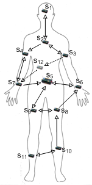

This documentation is released under the Creative Commons license
This documentation is released under the Creative Commons licenseThis project contains the implementation of the MoBAN mobility model as well as examples of exploiting MoBAN for simulating wireless networks including WBANs. The modules directory, includes NED files of the MOBAN modules and their c++ description files. The examples directory provides examples of using the model.
To run the examples, the project should be imported to the framework in OMNeT++ IDE. The MiXiM is the reference project for MoBAN project. So MiXiM should already be installed in the framework. To import the MoBAN project, follow the following in the IDE.
File -> Import... -> General (Existing Project into Workspace)
Here you can either select the root directory of the MoBAN project or select the archive file. By finishing this step, the MoBAN project is imported to the current workspace, next to the MiXiM project.
The BaseMoBANNetwork is the main network of the examples which uses the base network protocol stack existing in the MiXiM and includes the desired number of MoBANCoordinator modules. BaseNode module which defines a wireless node is imported from the baseNetwork examples of the MiXiM. All submodules of BaseNode (including the mobility module type) can be set through the '.ini' configuration file. In the case that a node is a WBAN node, the mobility type should be MoBANLocal. Two examples is provided which can be selected by including either 'example1.ini' or 'example2.ini' in the top of 'omnetpp.ini' file.
Note that MoBAN itself does not make any assumption about the position of nodes on the body and any other thing which might be related to the specific application scenario. The definition of all possible postures in the target application and their complete specifications are fed to the model by an XML file. The file path is specified by the 'postureSpecFile' parameter of the 'MoBANCoordinator' module. For more detail about making the posture specification xml file, see XML file for posture specification. Moreover, a configuration file determines the initial status and the spatial and temporal correlations in selecting the posture. It is given to the model by specifying an xml file to the 'configFile' parameter of the 'MoBANCoordinator' module. For more detail about the structure of this xml file, visit XML configuration file. In both examples, the node order and positions are set according to the following figure.

The first example is a single WBAN consisting of 12 wireless nodes. To have a better view in the graphical display, All dimensions are supposed to be in centimeters in this example. Obviously, the physical layer should take it into account. This is actually an example of using MoBAN for simulating an intra-WBAN protocol without considering the surrounding network. Moreover, in this example, the graphical display is from front view. It means we see x and z axis in the display. These are set in the 'postures1.xml' file, to make the behavior of the posture changes visible (just for demonstration purpose). No space-time correlation is defined in the 'configMoBAN1.xml'. Thus, the posture selection is uniform random.
The second example shows how MoBAN can be used for simulation of a full network including WBANs and a surrrounding network. The example is a network consisting of 44 sensor nodes from which 20 nodes are supposed to form an ambient (static) network. The remaining 24 nodes, are WBAN nodes of two different WBAN. So every WBAN is supposed to have 12 sensor nodes. Therefore, two MoBANCorrdinator module is instantiated in the network simulation. The dimensions specified in this example are in meters. So the WBAN movement behavior might not be well visible in the graphical display. However, it does not have anything to do with the accuracy of the simulation. It is just an issue in the graphical display, because OMNeT IDE considers bigger dimension.
In this example, the spatial and temporal correlation is exploited. Two area types ('BedRoom','LivingRoom') and two time domains ('Day','Night') are defined 'configMoBAN.xml' file. A Markov transition matrix is given which is considered as the base Markov transition matrix. Three steady state vectors are also specified. So for each space-time combination, a particular transition matrix will be used, either the base matrix or a derived matrix from the given steady state vector.
NOTE: Although the examples are developed to demonstrate the use of MoBAN as the mobility model, the provided posture specification can be a reprehensive for typical postures of a human body. So it might be used in your simulation. Of course, it is possible to adapt the posture file to your application scenario. For instance, if you are simulating an indoor network, you may want to exclude 'RUNNING' posture.
This documentation is released under the Creative Commons license